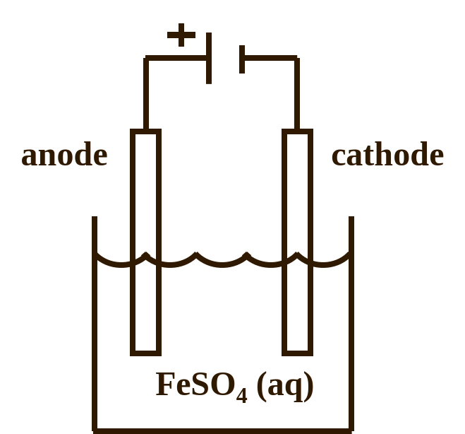
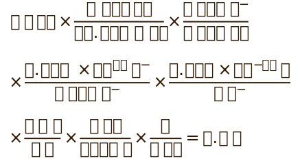
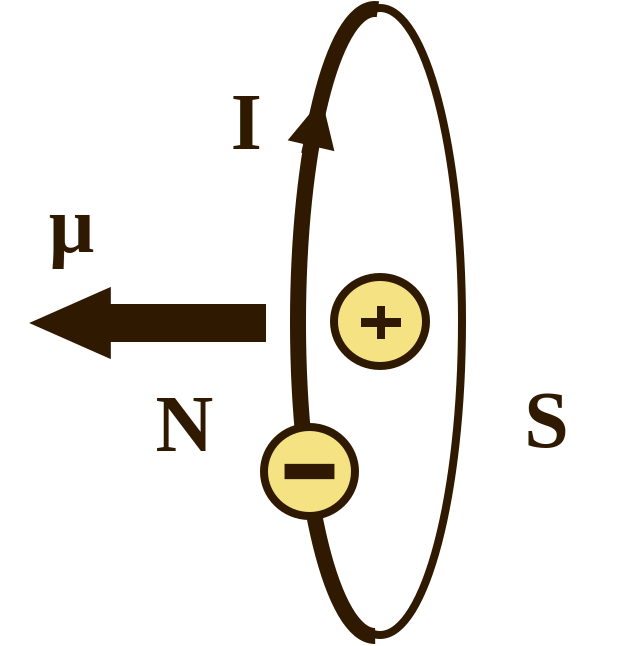
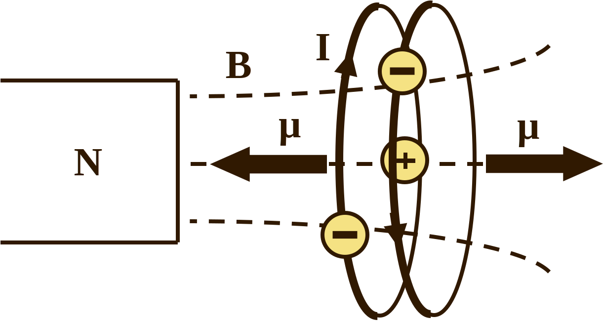
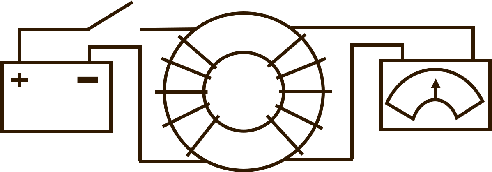
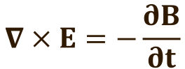

biography
Michael Faraday was born in Newington, Surrey, England to a blacksmith father and a mother from the countryside [1]. His family were members of a non-Anglican Christian sect that emphasized scriptural adherence and dissented against organizational structures of a church that were not clearly outlined biblically. Faraday believed in these principles, was strongly religious, and participated actively in a congregation throughout his life.
He only received a basic education in his youth. He learned to read and write in Sunday school but didn’t have the opportunity to study mathematics in detail [2]. Despite this disadvantage, Faraday was able to further his learning while apprenticing as a bookbinder for seven years starting at the age of fourteen. He would read the books from the shop focusing on the topics of science and had a preference for poring over anything that discussed electricity.
At 20 years old, Faraday went to a lecture series by renowned chemist Sir Humphry Davy. Faraday consolidated his own notes on the lectures, bound them, and sent the book to Davy. Davy was so impressed that he offered Faraday a position as his laboratory assistant at the Royal Institution of Great Britain. It was during this opportunity that Faraday learned a great deal about chemistry and experimental techniques.
After his apprenticeship with Davy, Faraday obtained his own position at the Royal Institution as an investigator. Because of his chemical prowess, he also consulted for large, industrial enterprises and served as an expert witness on chemical evidence in trials. He discovered new chemicals like benzene and invented the first iteration of the Bunsen burner. He married Sarah Barnard, joined the Sandemanian church, and served as a deacon.
Of all his accomplishments, Faraday is most famous for his work with electricity and magnetism. Faraday was fascinated by the discovery of contemporary scientists that a current carrying wire produces a circular magnetic field around it. Faraday took advantage of this phenomenon to create the first successful electric motor.
Faraday continued to work on theories and experiments in electromagnetism until 1839 when he suffered a nervous breakdown as well as developed a physical disability hampering his ability to walk. It has been theorized that he may have suffered from poisoning from mercury which he utilized heavily in his experimentation.
He returned to his work in 1845. He was offered knighthood by Queen Victoria but declined it preferring not to collect honorific titles and excess wealth citing his religious principles. He did however accept the use of a home at Hampton Court near his laboratory. He refused on ethical grounds to advise the British government on the development of chemical weapons during the Crimean War. He turned down the offer to be buried at Westminster Abbey, and when he died in 1867 he was instead interred at Highgate Cemetery in a special section for those who dissented against the Anglican church.
achievements
electrolysis
Faraday's experiments in electrochemistry led him to summarize the natural rules that govern electrolysis in two statements that are now known as Faraday's laws of electrolysis. They are [2]
- The amount of chemical change produced by a current at the electrode-electrolyte interface is linearly proportial to the amount of electricity used.
- The amounts of chemical change produced by the same amount of electricity in different species is directly proportional to each species' equivalent weight.
The meaning of these laws is best illustrated with an example. Consider the illustration of an electrolytic cell below.
A DC voltage source is connected to electrodes that are placed in an aqueous solution of iron (II) sulfate. The positive end of battery is connected to the anode which becomes positively charged. The negative end of the battery is connected to the cathode which becomes negative. If you look up sulfate in a reference for polyatomic ions, you will see that it always has a charge of 2-. FeSO4 dissociates in aqueous solution into Fe2+ and SO42- ions. The positive Fe2+ ions will be attracted to the negative cathode. Electrons from the cathode will combine with the Fe2+ ions and reduce the iron atoms' charge in a reduction reaction. The iron will then stick to the cathode which we call plating.
Let's apply the concepts in Faraday's law in a numerical example. What if want to collect 8 g of iron from the iron (II) sulfate solution in 3 hours? What current do we need to provide in the electrolysis process to plate this much iron on the cathode in the electrolytic cell?
First let's write the balanced reduction reaction of of iron (II) ions.
Fe2+ + 2e- → Fe
What this means is that for every mol of iron you want plated you will need 2 mols of electrons. Now we can do some stoichiometric and dimensional analysis to determine how much current is required to plate 8 g of iron.
This is quite a tedious calculation but let's explain what is happening in each step. We know we want to plate 8 g of iron so that is at the beginning of the calculation on the left. Most of the steps here are simply unit conversion. The second step is to divide by the molar mass of iron which was obtained from a periodic table. Next is the stoichiometric step where we use the fact that for every one mol of iron that is produced we need 2 mols of electrons according to the reduction reaction shown above. In the next step, we convert from mols of electrons to number of electrons using Avogadro's number. Then in the next step we convert from electrons to amount of charge in coulombs, C. Next we convert from C to ampere seconds, A s. Then we convert from seconds to hours, hr. Finally, we can divide by the amount of hours that we plan to apply the unknown current. If you can cancel all like units on the top and bottom, we are left only with A which indicates that this is a correct calculation of the current. We find that we will need to apply a current of 2.5 A for 3 hours to plate 8 g of Fe in our electrolytic cell.
diamagnetism
Before Faraday's discovery of diamagnetism, paramagnetism was a known effect. Permanent magnets always are magnetized and will have the expected magnetic properties. However, materials that are not magnets will become temporarily magnetic in the presence of an external magnetic field [3]. Paramagnetic materials are slightly attracted to magnets. This effect arises because atoms with unpaired electrons have a tiny magnetic moment, μ, due to the magnetic moment of electrons as depicted below.
The magnetic moment of electrons is a result of the spin and orbital angular momentum of the charged electrons in their orbitals around the nucleus. These properties of the electron act like a tiny current, I, which produces a magnetic field and thus they have a magnetic moment.
For an atom where all the electrons are in pairs, these magnetic moments cancel each other because the paired electrons have opposite spins and the atom has a net zero magnetic moment. If the atom has an odd number of electrons, then one electron will be unpaired. The atom will have a net magnetic moment and will act like a tiny magnet. If the north pole of a magnetic is brought toward a sample of paramagnetic material, the south poles of the atoms will be attracted to the magnet and the north poles will be repelled. The atoms will turn because of this and the magnetic moments of the atoms will all start to line up. They will not perfectly line up because thermal fluctations will also affect them and change their orientation. But they will be slightly aligned because of the magnet.
Macroscopically, the material will now be slightly magnetic with a magnetization in the direction of the magnetic moments of the atoms. Just like the south poles of the electrons have become oriented closer to the magnet, the paramagnetic material will develop a south pole on it's side closer to the magnet. It will be attracted to the magnet and may draw closer to it barring other stronger forces on the sample.
Paramagnetism is a very weak effect that causes materials to be attracted to magnets. This effect is due to the collective effect of the magentic moments of unpaired electrons in the atoms of some materials. What Faraday discovered through careful, sensitive experimentation is that some nonmagnetic materials are instead repelled by magnets. This effect is much weaker than paramagnetism. It arises because of an induced emf in the current loop of the electrons as a magnet is brought towards it. The changing magnetic flux through these current loops induces an emf which produces a magnetic field to oppose the change according to Lenz's law [4]. If you have a material with no unpaired electrons, then all electrons are in pairs of two that are like two current loops with currents in opposite direction or magnetic moments in opposite direction. One of these loops will have a magnetic moment in the same direction of the external magnetic field, B, as depicted below.
An emf will be induced in this loop to oppose an increase in the magnetic flux. The current in this loop will decrease to oppose an increase in the flux. This also means the magnetic moment of the elctron will decrease.
The other loop has a magnetic moment in the opposite direction of the external field. As the magnet approaches it will decrease the flux through the loop. This will cause an induced emf that responds by increasing the flux. The current will increase and increase the electron's magnetic moment to oppose a decrease in the flux. As a result the magnetic moments will no longer be equal. That means they no longer cancel eachother out, and there is a net magnetic moment in the atom and a net magnetization in the material. This magnetization points in the opposite direction of the external magnetic field. This is because the loop with a magnetic moment in the opposite direction increased and the loop with a magnetic moment in the same direction got smaller. So the material becomes a magnet with its north end pointing toward the north end of the permanent magnetic you brought towards it. These north ends will repel each other. Materials that undergo this process are called diamagnets and they are repelled by permanent magnets. Diamgnetism occurs in any material that has paired electrons so it actually occurs in all matter. Atoms with an unpaired electron in their valence will still have electron pairs in inner orbitals. Those pairs will create a diamagnetic effect. It's just that the paramgnetic effect is always much stronger so paramagnetic materials will always be attracted to magnets instead of repelled by them.
electromagnetic induction
Danish scientist, Hans Orsted made the discovery that a current carrying wire produces a circular magnetic field around it. After this revelation, many scientists including Faraday speculated whether a magnetic field could create a current. All experiments showed no results including Faraday's original attempts. That is until he took an iron ring, wrapped a wire coil around one side of the ring, and attached the coil to a battery. Then he wrapped a coil of wire around the other side of the ring and attached it to a galvanometer which measures current as depicted in the figure below.
He placed a switch between the battery and the coil wrapped around the ring. What he noticed is that the magnetic field produced by the battery-side coil did in fact induced a current on the galvanometer-side coil. However, it only did so for a brief moment when the switch was closed or when it was opened. What the result indicated was that only a changing magnetic field can induce a current. More specifically, an emf will be induced in a current loop to oppose any change in the magnetic flux throught the loop. This is Lenz's law which we used in our discussion of diamagnetism.
impact
Faraday's work has influenced many fields and subjects from chemistry, to material engineering, to physics. The most important contribution is most likely his discovery of electromagnetic induction. His theorizing that a current is induced that opposes a change in the magnetif flux was crucial to the formulation of Maxwell's equations that completely describes the physics of electricity and magnetism.
If you recall from the biography above, Faraday never received a strong mathematical education. Faraday took careful data but a lot of his laboratory notes, documentation, and publications are exclusively descriptive in nature without complex calculations. This is indicative of a strong intuitive understanding of the phenomena he was discussing without a need to rely on mathematical models to understand the physics. Others were able to synthesize Faraday's ideas into mathematical formalism and thus the third law of Maxwell's equations as shown below is called Faraday's law.
There is one more related contribution by Faraday that turned out to have a suprisingly important impact on our understanding of the world. Late in his life, Faraday filled in last minute for an absent guest lecturer at the Royal Institution of Great Britain [2]. He decided to discuss his ideas about the the electromagnetic fields produced by atoms. He speculated that those fields might be the medium through which light waves propagate. This would turn out to be true and would heavily influence the ideas of James Clerk Maxwell who would prove this mathematically. This idea is the culminating result of the theory of electromagnetism and leads to special relativity. Albert Einstein kept a picture of Faraday in his office.
references
- [1] The Twickenham Museum. (n.d.). Michael Faraday natural Scientist - discoverer of Electro-magnetic INDUCTION 1791 - 1867. Michael Faraday, Natural scientist - discoverer of electro-magnetic induction - Twickenham Museum. Retrieved September 22, 2021, from Twickenham Museum
- [2] Williams, L. P. (2021, September 18). Michael Faraday. Encyclopædia Britannica. Retrieved September 22, 2021, from Encyclopedia Britannica
- [3] R. A. Serway, R. J. Beichner, and J. W. Jewett, Physics For Scientists and Engineers (Saunders College Publishing, Fort Worth, 1999).
- [4] D. J. Griffiths, Introduction to Electrodynamics (Prentice-Hall Inc., Upper Saddle River, 1999).